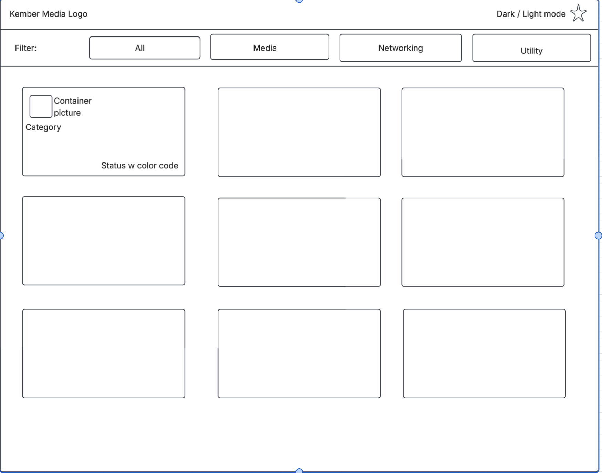

Overview
Purpose
I run a home server with a bunch of Docker containers on it (media apps, network tools, utilities, etc.), and right now I just have an auto-generated homepage that lists them all with no real organization. For my final project I want to build my own dashboard page where I can filter my containers by category and see whether each one is actually up and running or not.
Audience
This is mainly for myself since I'm the one managing the server, but really it could be useful for anyone else who self-hosts a bunch of apps and wants an easier way to get to them than scrolling through a plain list of links.
Dynamic elements
I'll make an array of objects, one for each container, with the
name, url, and category. I'll use .map() to loop
through that array and build the HTML for each container
automatically instead of typing it out by hand. I'll also add
filter buttons (like "Media" or "Utility") so clicking one filters
the array down to just that category. If I have time, I want to
add a status check that pings each container and shows a
green/yellow/red dot depending on if it's running, stopped, or not
responding.
Branding
Website Logo

Style Guide
Color Palette
Palette URL: [https://coolors.co/1a1625-7c3aed-a78bfa-f4f1fa-2a2438]| Use | Color | Hex Code |
|---|---|---|
| Primary | #7c3aed | |
| Secondary | #a78bfa | |
| Accent | #f4f1fa |
Pseudocode for your project
1. Make an array with all my containers in it (name, url, category)
2. When the page loads:
- Loop through the array
- For each container, build a little card with its name,
category, and a link to open it
- Put all the cards on the page
3. Filter buttons:
- When I click a category button, filter the array down to just
that category
- Rebuild the cards using only the filtered list
- If I click "All", show everything again
4. (Stretch goal) Status check:
- Every so often, check if each container is actually reachable
- Update the card to show green/yellow/red depending on status
- If the check fails for some reason, just show it as unknown
instead of crashing the page
Wireframes
Landing page
Single page dashboard with a filter bar at the top and a responsive card grid below, one card per container.
